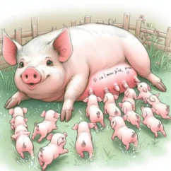

子豚の強さランキング！生まれた順番で決まる力関係の秘密
🐽 この記事でわかること
- 子豚は生まれて数秒〜数分で、もう「順位争い」を始めていること
- 「生まれた順番」と「生まれつきの体の大きさ」、力関係を決めるのは実はどちらなのか
- 一度決まった「おっぱいのポジション」が、その後の性格や成長にまで影響するという研究結果
- 20年以上、養豚の現場で子豚を見てきた筆者のリアルな観察
生まれたばかりの子豚に「よちよち歩き」の期間はありません。母豚のお腹から出てきて、早ければ数十秒後にはもう自分の足で立ち上がり、おっぱいを目指して一直線に進み始めます。しかも生まれたときからすでに鋭い歯が生えており、目当てのおっぱいをめぐって、生まれたその日のうちに兄弟同士の小競り合いが始まるのです。人間の赤ちゃんとは比べものにならないスピード感で、子豚たちは「群れの中での自分の立ち位置」を決め始めています。この記事では、研究データをもとに、子豚社会の力関係が何によって決まるのかを、20年以上の養豚経験を交えながら紹介します。
🐷 まずはクイズです
生まれたばかりの子豚が、自力で立ち上がっておっぱいまでたどり着くのにかかる時間はどのくらいでしょう？
①数時間 ②数十分 ③数十秒
正解は本文の中で明らかになります。
生まれてすぐ始まる「おっぱい争奪戦」
子豚は母豚の体内にいるうちからすでに歯（乳歯）が生えた状態で生まれてきます。そのため出産直後から、きょうだいたちと本気の小競り合いが起こります。狙うのは母豚のお腹に並んだ複数のおっぱいで、位置によって出る乳の量が違うことを、子豚たちは驚くほど早く「学習」しているようです。
研究の観察によると、この「どの子がどのおっぱいを使うか」という順番（テット・オーダーと呼ばれます）は、生後1週間ほどでほぼ固定されます。一度自分の場所が決まると、子豚は離乳するまでその同じおっぱいに通い続ける傾向が強いこともわかっています。まさに「早い者勝ち」ならぬ「強い者勝ち」の陣取り合戦です。
面白いのは、子豚たちが最初からきれいに前後に分かれるわけではないという点です。生まれて間もない頃は、まず母豚の脚の付け根に近いあたりのおっぱいに集まりやすく、そこから徐々に前方または後方へと散らばっていくことがわかっています。母豚の鳴き方やにおい、おっぱいの形の違いなどが、この「陣取り」の手がかりになっているのではないかと考えられています。また不思議なことに、1回の出産で生まれる頭数が多くても少なくても、この陣取りのパターン自体にはあまり違いが見られないという報告もあります。

Illustration: 母豚と子豚たち（ロラニキ提供イラスト）
「強い子豚」が前列を取るメカニズム
興味深いのは、前方のおっぱいを確保するのは「一番早く生まれた子」とは限らないという点です。ポルトガルの研究チームが280頭の子豚を対象に行った調査では、出生時の体重が重い子豚ほど、乳量の多い前方のおっぱいを確保する傾向が確認されました。つまり「生まれた順番」よりも「生まれつきの体格」の方が、おっぱいの陣取り合戦では強く影響しているということです。
そして前方のおっぱいを確保できた子豚は、その後もより多くの乳を飲み続けられるため、離乳時の体重も重くなりやすいという結果も出ています。生まれた瞬間のわずかな体格差が、その後の成長差につながっていく構図です。
なぜ前方のおっぱいの方が乳量が多いのかについては、乳腺の発達具合や血流の通り道の違いなど、体の構造そのものに理由があると考えられています。子豚たちはこの「見えない優劣」を、においや吸い付いたときの感触といった手がかりから瞬時に嗅ぎ分けているようです。体が大きく力の強い子豚が真っ先にこの好条件のおっぱいに突進し、体の小さな子豚は競争の少ない後方へと押し出されていく——これが、生後わずか数日で完成する「子豚社会の縮図」なのです。
| おっぱいの位置 | 乳量の傾向 | よく見られる子豚 | その後の成長傾向 |
|---|---|---|---|
| 前方（頭側） | 多い | 出生体重が重い子 | 離乳時の体重が重くなりやすい |
| 中央 | 中くらい | 競争が最も激しいエリアの子 | きょうだい間の小競り合いが多い |
| 後方（お尻側） | 少なめ | 遅れて生まれた子・体の小さい子 | 体重増加がゆるやかになりやすい |
「生まれた順番」だけでは強さは測れない？
イギリス・北アイルランドの農業食品バイオサイエンス研究所が、2,100頭以上の子豚を対象に行った大規模調査があります。出産の中で生まれた順番を「早生まれ（1〜5番目）」「中間（6〜10番目）」「遅生まれ（11番目以降）」の3グループに分けて生存率を比べたところ、次のような結果が出ました。
興味深いのは、この差が「体の大きさ」では説明できなかったという点です。早生まれの子豚の平均体重と、遅生まれの子豚の平均体重はほぼ同じ（1.37kg前後）でした。つまり遅く生まれた子豚は、体が小さいから不利なのではなく、出産が長時間に及ぶことで一時的に酸素不足の状態（軽い酸欠）になりやすく、生まれてすぐの元気さや初乳を飲む勢いが落ちてしまうことが、生存率の差につながっていると考えられています。
ちなみに、生まれたときの体重そのものも生存率に大きく関わっており、別の研究では体重0.9kg前後の子豚の生存率が約68%だったのに対し、1.6kg前後の子豚では約89%まで上がるというデータもあります。「生まれた順番」と「生まれつきの体格」は、それぞれ別の角度から子豚の運命に影響しているのです。

写真・イラスト差し替え位置②（子豚が並ぶシーン）
「最後に生まれた子」が意外と不利じゃない理由
「一番あとに生まれた子豚は一番弱い」というイメージを持つ人は多いかもしれません。しかしある研究では、最後に生まれた子豚の出生体重が、実は真ん中あたりで生まれた子豚よりも重かったというデータが報告されています。出産の終盤にかけて、むしろ大きめの赤ちゃんが生まれてくるケースがあるということです。
また同じ研究では、最初に生まれた子豚と最後に生まれた子豚の「物事の受け止め方の前向きさ」を調べる行動テストも行われましたが、両者の間に大きな差は見られませんでした。おっぱいの陣取り合戦では後方に落ち着きやすい「最後に生まれた子」でも、生き延びた個体は精神面でしっかりたくましく育っている、という結果です。生まれた順番は、その後のすべてを決めてしまう絶対的な運命ではないのかもしれません。
授乳期の順位は、大人になっても影響するのか
豚は離乳したあと、知らない豚同士が新しいグループに混ぜられると、わずか30分〜1時間ほどで新しい順位（力関係）が決まると言われています。豚同士がケンカをして、勝った側が優位に立ち、以降はその関係がかなり安定して続くのが特徴です。上位の豚は主に「自分のすぐ下の順位の豚」に対して威嚇行動を向ける傾向があることも報告されています。
さらに興味深いのは、授乳期に競争の激しい「中央のおっぱい」を使っていた子豚は、離乳後に新しいグループへ混ぜられたときも、他の子豚に比べて落ち着きがなく攻撃的な行動を見せやすい、という研究結果があることです。赤ちゃん時代に身につけた「戦い方のクセ」が、大人になってからの性格にもうっすらと影響を残しているようです。

写真・イラスト差し替え位置③（群れのシーン）
鶏の「つつき順位」との共通点
「生まれた直後から順位が決まっていく」という現象は、実は豚だけの特徴ではありません。鶏の世界にも「つつき順位」と呼ばれる有名な力関係があり、群れの中で誰が誰をつつけるかが明確に決まっています。豚のテット・オーダーと鶏のつつき順位は、決まり方の細かい仕組みこそ違いますが、「早い段階での小さな競争の積み重ねが、その後の群れの中の立ち位置を決めていく」という点で驚くほどよく似ています。
群れで暮らす動物にとって、無用な争いを毎回繰り返すのは大きなエネルギーの無駄です。順位というルールをあらかじめ決めておくことで、日々のケンカを最小限に抑え、限られた食料や資源を効率よく分け合う。子豚のおっぱい争いも、そうした「群れの知恵」のひとつの現れなのかもしれません。
頭数が増えるほど、争いは激しくなる
近年、豚の品種改良によって一度に生まれる子豚の頭数（産子数）は年々増える傾向にあります。頭数が増えること自体は喜ばしいことのように思えますが、母豚のおっぱいの数には限りがあるため、1頭あたりが使えるおっぱいの「席」はむしろ狭き門になっていきます。研究では、出生体重が1.2kg未満の低体重の子豚の割合が全体の2割を超える農場も報告されており、頭数の多さが競争の激しさに直結している様子がうかがえます。
おっぱいの数より子豚の数が多い場合、あぶれてしまった子豚は複数のおっぱいを転々とすることになり、安定した授乳ができずに体重の伸びが鈍くなりがちです。「兄弟姉妹の数」もまた、生まれた瞬間の力関係を左右する隠れた要因のひとつだといえるでしょう。
❓ よくある質問
Q. 一度決まったおっぱいの順位が途中で変わることはありますか？
まれに、体格の変化やきょうだいの死亡などをきっかけに位置が変わることもありますが、基本的には生後1週間ほどで固定された順位が離乳まで維持される傾向が強いとされています。
Q. 冒頭のクイズの答えは？
正解は③の「数十秒」です。子豚は生まれてすぐに立ち上がり、驚くほど短時間でおっぱいに向かって動き出します。
Q. 力の弱い子豚を人間が助けることはできますか？
実際の養豚の現場では、体の小さな子だけを別に管理して哺乳の機会を確保するなど、人の手を加えるケースもあります。ただし本記事は獣医学的な指導を目的としたものではなく、研究で明らかになった子豚社会の仕組みを紹介するものです。個別の判断が必要な場合は、専門家に相談することをおすすめします。
🐖 現場からひとこと（養豚経験より）
実際に豚舎で子豚を見ていると、生まれて数時間のうちに「もうこの子は強いな」とわかる子がいます。体の大きさだけでなく、おっぱいに向かう足取りの速さや、押し合いになったときに一歩も引かない態度に、その子豚の性格がすでに表れているように感じます。研究データを知ってあらためて振り返ると、あの小さな押し合いへし合いが、その後の成長曲線までも左右していたのだと実感します。
まとめ
- 子豚は生まれた直後から、おっぱいの位置をめぐる「陣取り合戦」を始めている
- 前方のおっぱいを確保しやすいのは「早く生まれた子」より「体が大きい子」
- 生まれた順番自体は、出産の長さによる一時的な酸欠などを通じて生存率に影響する
- 最後に生まれた子豚が必ずしも不利とは限らず、たくましく育つケースも多い
- 授乳期の競争経験は、離乳後の性格や群れの中での振る舞いにもうっすら影響を残す
参考文献
- Fraser, D. (1984) — 子豚の授乳行動とテット・オーダーの形成に関する研究（Applied Animal Behaviour Science）
- Vieira, M.C. et al. (2025) — 出生体重と乳頭の位置、離乳前の成長曲線に関する研究（Archives of Animal Breeding）
- 北アイルランド農業食品バイオサイエンス研究所（AFBI）— 出生順位と子豚生存率に関する大規模追跡調査
- Vanden Hole, C. et al. / Kammersgaard, T.S. et al. ほか — 低出生体重の子豚における生存率としきい値に関する研究（Journal of Animal Science）
- Sandøe Telkänranta, H. ほか (2021) — 出生順位が子豚の成長と情動状態に与える影響に関する研究（Frontiers in Animal Science）
- Camerlink, I. & Turner, S.P. ほか — 豚の順位形成と攻撃行動に関する行動学研究（Applied Animal Behaviour Science）